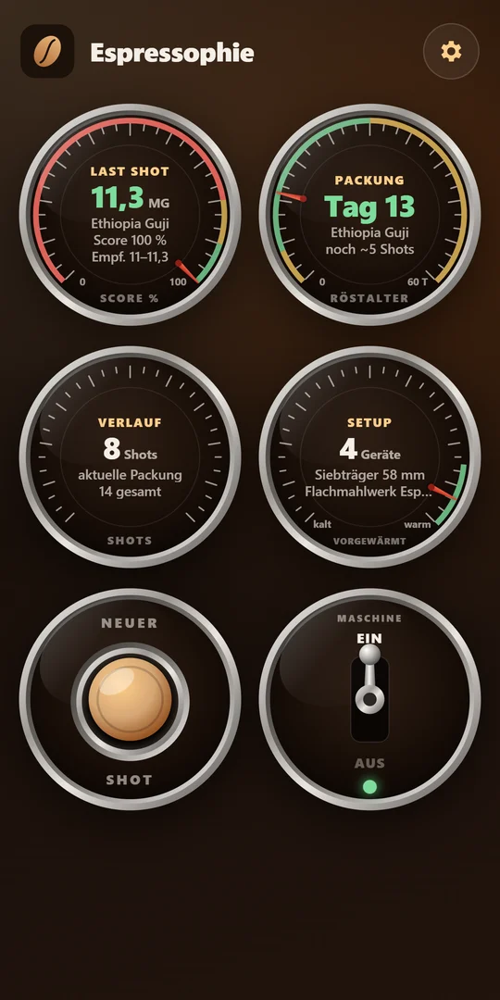
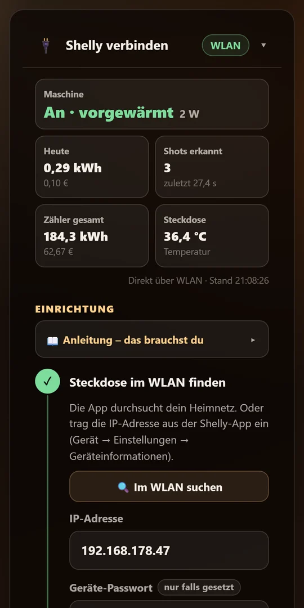
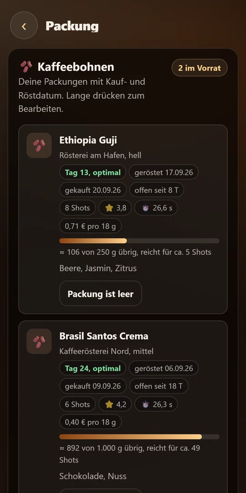

Shots festhalten
Bohne, Mahlgrad, Zeit, Input und Output, Druck, Notiz und Bewertung – mit automatischer Ratio und Score.
Verstehen, was in der Tasse passiert.
Halte jeden Shot fest, finde den idealen Mahlgrad für jede Bohne und bekomme nach jedem Espresso einen konkreten Tipp für den nächsten. Mit smarter Steckdose heizt deine Maschine vor, bevor du in der Küche bist.

Kein Rezeptbuch, sondern dein persönliches Espresso-Labor – übersichtlich im Look einer klassischen Siebträgermaschine.
Bohne, Mahlgrad, Zeit, Input und Output, Druck, Notiz und Bewertung – mit automatischer Ratio und Score.
Eine Empfehlung pro Bohne, berechnet aus deinen besten Shots – getrennt nach Mühle.
Röstalter, Frische, Restmenge und was ein Shot kostet. Die App sagt dir, wie lange die Packung noch reicht.
Nach jedem Shot eine kurze Einschätzung und ein konkreter nächster Schritt – mit einem KI-Anbieter deiner Wahl, auch kostenlos.
„Maschine ist vorgewärmt“, „Schaltet gleich ab“, „Reinigung fällig“ – jede einzeln ein- und ausschaltbar.
Maschinen, Mühlen und Zubehör verwalten, Reinigungen protokollieren und sehen, was als Nächstes fällig ist.
Espressophie lernt aus deinen Shots. Beim nächsten Mal siehst du sofort, welcher Mahlgrad für diese Bohne funktioniert hat – und was du ändern solltest.
Bohne wählen, Mengen und Zeit eintragen – mit smarter Steckdose wird die Extraktionszeit automatisch erkannt. Ratio und Score rechnet die App selbst aus.
Aus deinen besten Shots entsteht eine Mahlgrad-Empfehlung pro Bohne und Mühle – mit einem Tipp übernommen. Der Barista-Tipp liefert Diagnose, nächsten Schritt und was du erwarten kannst.
Im Verlauf siehst du jeden Shot mit Mahlgrad, Zeit, Mengen, Bewertung und Barista-Tipp – filterbar nach Datum und Kaffee. So wird aus Bauchgefühl reproduzierbarer Geschmack.
Typische Startwerte für einen doppelten Espresso – in der App legst du deine eigenen Zielwerte fest.
Mit einer Shelly-Steckdose schaltest du deine Siebträgermaschine per App ein – zu Hause über WLAN, unterwegs über die Shelly Cloud. Espressophie zeigt dir, wann sie vorgewärmt ist.
Getestet mit dem Shelly Plug S Gen3. Shelly ist eine Marke der Shelly Group; Espressophie ist kein offizielles Shelly-Produkt.


Espressophie hat keinen eigenen Server. Meldest du dich mit Google an, liegen deine Daten in deinem eigenen Google Drive im Ordner „Espressophie“ – die App sieht nur ihre eigenen Dateien. Ohne Anmeldung bleibt alles auf deinem Handy.
Espressophie befindet sich im Test. Die Veröffentlichung im Google Play Store ist in Vorbereitung. Eine iPhone-Version ist geplant.
Nein. Wenn du den optionalen KI-Barista mit einem kostenpflichtigen Anbieter nutzt, rechnet dieser direkt mit dir ab – meist deutlich unter einem Cent pro Tipp. Mit Groq oder OpenRouter geht es auch kostenlos.
Nein. Alle Funktionen rund um Shots, Bohnen und Empfehlungen funktionieren ohne. Die Steckdose ergänzt Vorheizen, Shot-Erkennung und Verbrauchsanzeige.
Nein. Ohne Anmeldung bleiben deine Daten nur auf dem Handy. Mit Google-Anmeldung werden sie in deinem eigenen Google Drive gesichert und sind auf allen deinen Geräten verfügbar.
Nur die Shot-Daten (Bohne, Mahlgrad, Mengen, Zeit, Bewertung, Notiz), deine Zielwerte und dein Setup – kein Name, keine E-Mail. Die Anfrage geht direkt an den Anbieter, den du gewählt hast, mit deinem eigenen Schlüssel.
Espressophie erscheint bald im Google Play Store.
Bald beiGoogle Play